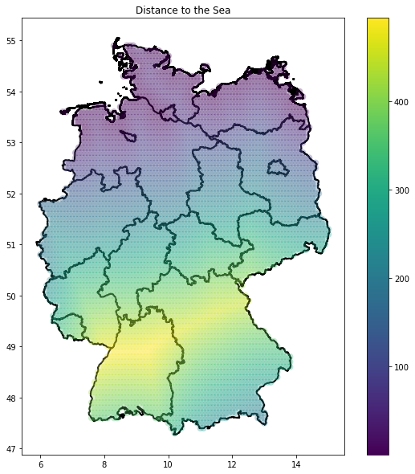

Which geographic location in Germany is furthest away from the Sea?
Problem
The goal was to find the geographic point in Germany which is furthest away from the sea. A frequently used name for such a place is the Pole of Inaccessibility (Castellanos and Lombardo, 2007).
The Wikipedia entry for Pole of Inaccessibility lists a variety of such places for different continents, countries, or other geographic regions
(https://en.wikipedia.org/wiki/Pole_of_inaccessibility),
but Germany is missing and up until last year only rough guesses could be found online
(https://www.gutefrage.net/frage/welcher-punkt-in-deutschland-ist-am-weitesten-vom-meer-entfernt).
In 2021 the first calculation was published on the website landgeist.com which found the municipality Riedbach (Baden-Württemberg) with a distance of about 463 km from the sea,
but the calculations from landgeist.com only considered settlements, and no coordinates are given
(https://landgeist.com/2021/07/29/town-village-furthest-from-the-coast/).
Method
As landgeist.com mentioned, the coastline paradox is a particular problem of such a task. The coastline paradox states that the length of a coastline is not well-defined and as such,
the method of calculation strongly affects the results, therefore the result of a Pole of Inaccessibility also strongly varies depending on the used coastline data set. For my calculations,
I used the coastline data from naturalearthdata.com
(https://www.naturalearthdata.com/downloads/10m-physical-vectors/10m-coastline/).
The calculations were performed in python using e.g.
the modules geopandas, geopy, plotly, and shapely. First, the shp-file of the coastline data was transformed into a pandas data frame containing coordinates along the coast.
This data was resized such that only potentially relevant shorelines of Europe are included. In the second step, another data frame containing points across a grid over Germany was created.
In the third step, the distance between each point of the Germany-data-frame and each coastline coordinate of the coastline data set was calculated and the minimum distance of each point in the
Germany-data-set was stored.
Results
Based on the results from above, the following map was created, which shows the minimum distance to the sea of each point in Germany:

The maximum distance in the Germany-data-set yields a first estimate for the German Pole of Inaccessibility. In order to get a more accurate result,
an optimization algorithm was used.
The map above shows the found point, which lies in Affalterbach. Like the result of landgeist.com, Affalterbach also lays in Baden-Württemberg. The distance to the sea is about 497 km,
which is roughly 34 km further away from the sea than the result of landgeist.com.
In addition to the minimum distance to the sea of each considered point in Germany, the respective coastline coordinates were stored, such that
the following map could be created, showing which sea is closest in which region in Germany: